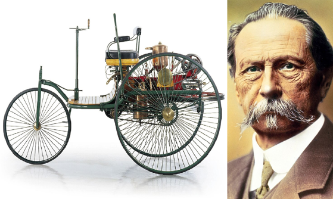
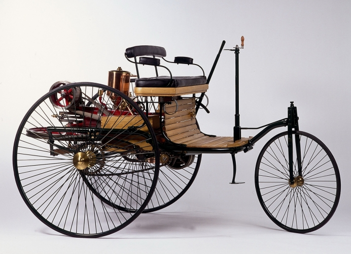

Mercedes-Benz a fost creat prin fuziunea a două companii mari: Benz & Cie și Daimler-Motoren-Gesellschaft (DMG). Inventatorii Karl Benz și Gottlieb Daimler au fost pionierii în crearea primelor automobile.

Primul automobil care a purtat numele „Mercedes” a fost creat în 1901, iar în 1926 a apărut oficial marca Mercedes-Benz. Compania a continuat să inoveze cu tehnologii de siguranță și performanță deosebite.
